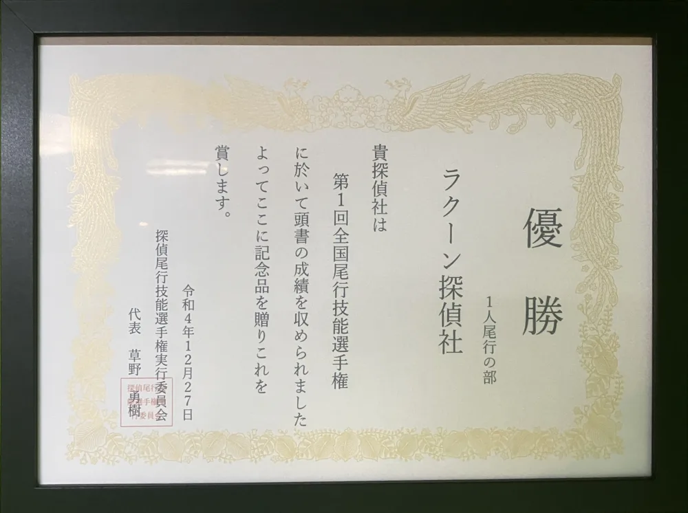
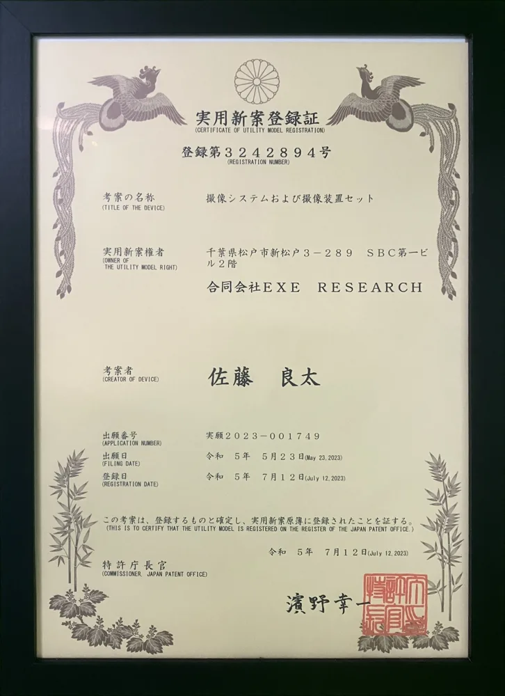
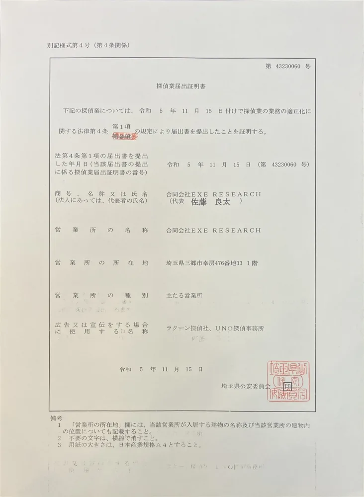
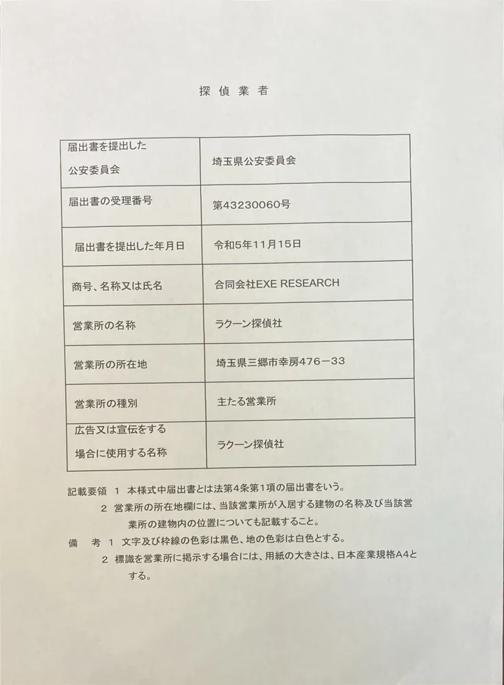
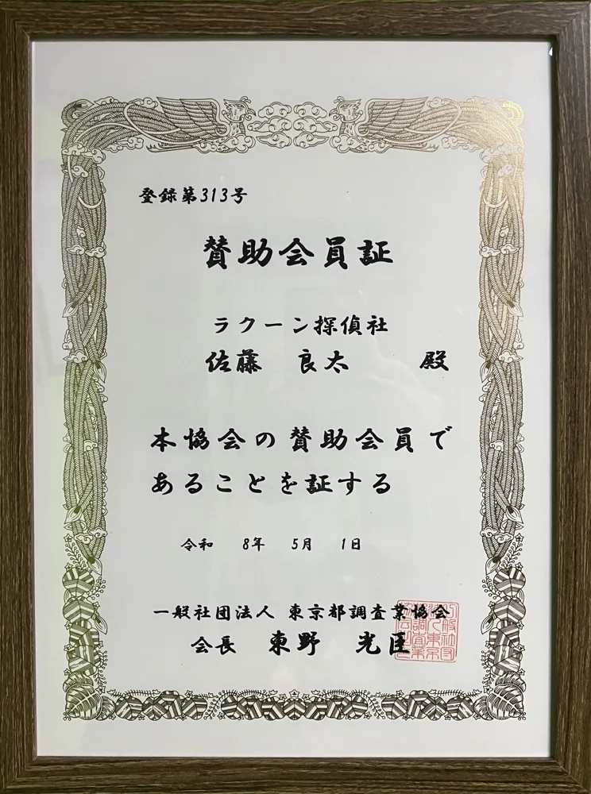
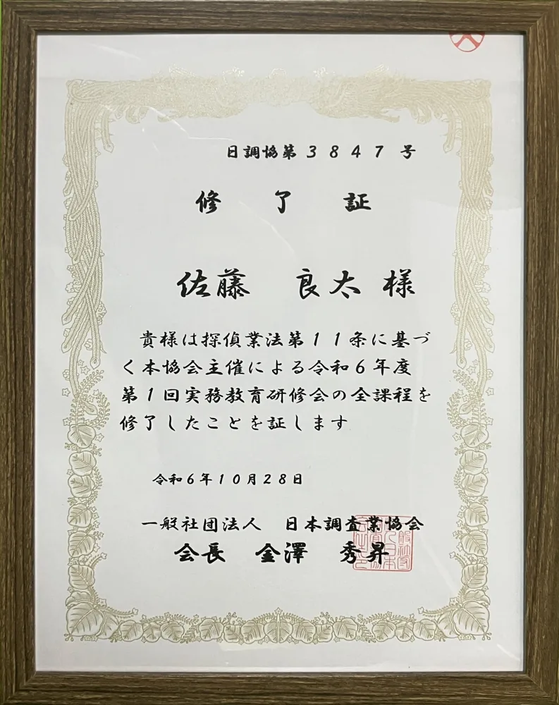
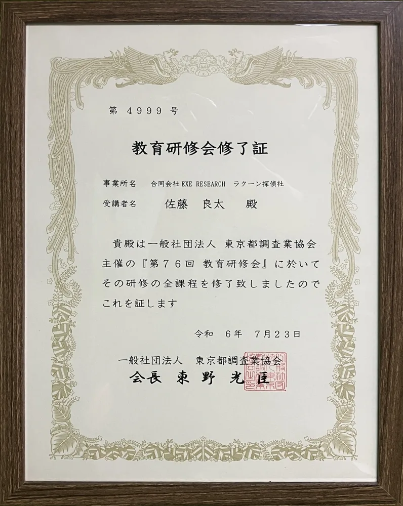
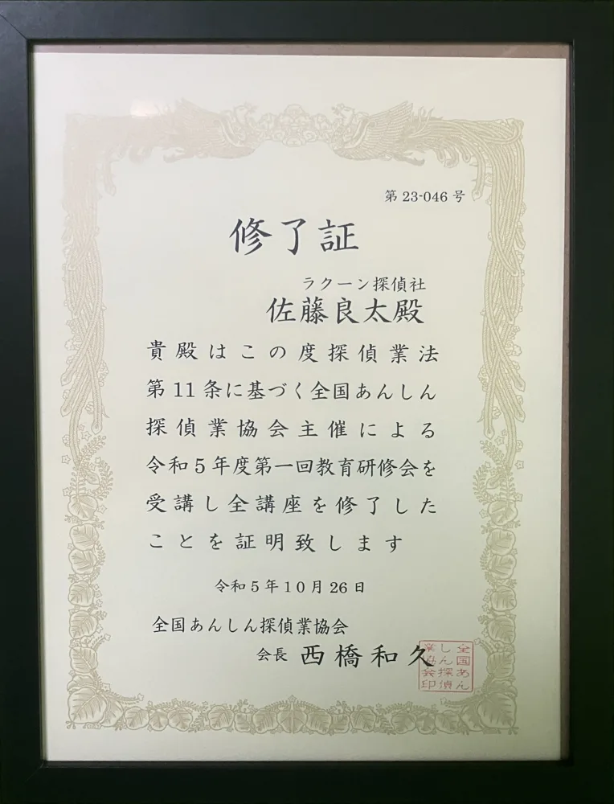

済み
- 届出番号
- 43230060
- 営業所住所
- 埼玉県三郷市幸房476-33
- 代表者
- 佐藤良太
埼玉県三郷市の探偵・興信所｜浮気調査ならラクーン探偵社
24時間受付・年中無休｜浮気調査のご相談はこちら

ひと目でわかるラクーン探偵社
- 対応できる調査
- 浮気・不倫調査、素行調査、人探し・ペット探し、ストーカー・嫌がらせ対策、盗聴発見、結婚前調査、企業調査、リモート調査
- 料金の目安
- リモート調査 77,000円／24時間（税込・定額） 尾行調査 19,800円／1時間〜
- 支払い方法
- 一括払い・分割払い（調査報告書の提出時に精算）
- 対応エリア
- 埼玉県・東京都・千葉県を中心に全国対応
- 相談受付
- 365日24時間（電話・LINE・メール・対面）
ラクーン探偵社の紹介
どんな探偵社？
「ラクーン探偵社」は、埼玉県三郷市に事務所を置く探偵社です。運営は合同会社EXE RESEARCHで、2022年9月に創業しました。自社で開発したカメラを設置して遠隔から記録する「リモート調査」を主力にしている点が、ほかの探偵社との大きな違いです。
- カメラによるリモート調査が主力
調査員が現場に長時間とどまらないため、費用を抑えやすく、対象者に気づかれるリスクも小さくできます。 - 尾行・張り込みにも対応
移動先の特定や決定的な場面の撮影が必要なときは、調査員2〜3名の体制で尾行調査を行います。 - 13名体制・女性調査員も在籍
アルバイトを含めて13名が在籍しており、女性の調査員が必要な場面にも対応できます。
調査内容と料金の目安
浮気・不倫調査を中心に、個人・法人の調査に対応しています。料金は公式サイトで公開されており、契約の前に見積もりが提示されます。
- リモート調査（77,000円／24時間・税込）
機材費と設置作業を含む定額制です。交通費などの実費は別にかかります。 - 尾行調査（19,800円／1時間）
時間料金のほかに、車両・機材費22,000円（1稼働ごと）と交通費などの実費がかかります。 - 人探し・ペット探し（成功報酬制）
基本料金0〜20万円、成功報酬10万〜100万円と実費。金額と「成功」の条件は契約前に決めます。 - そのほかの調査
ストーカー・嫌がらせ対策、素行調査、企業調査、盗聴発見、結婚前調査。
支払いは一括・分割に対応し、調査報告書の提出時に精算します。相談と見積もりは無料です。
注目ポイント
ラクーン探偵社は、機材の開発と尾行の技術の両方に取り組んでいる探偵社です。
- 実用新案登録のカメラを自社開発
調査用のIPカメラを自社で開発し、実用新案登録（第3242894号）を受けています。同業の探偵事務所への機材提供と講習も行っています。 - 尾行の全国大会で優勝
代表は、第1回全国尾行技能選手権（2022年12月）の「1人尾行の部」で優勝しています。 - リモート調査と尾行の組み合わせ
先にカメラで行動パターンをつかみ、動きのある日だけ尾行を入れることで、調査時間を絞り込みます。 - 料金の名目は3つだけ
尾行調査の料金は「時間料金・車両機材費・実費」の3つで、出張料金の名目はありません。実費の内訳は請求書に明記されます。 - 弁護士事務所と連携
調査のあとの離婚協議や法的な手続きまで見すえた提案を行っています。
相談を考えている方へ
「料金の内訳は必ず明確にお伝えします。できないことはできないと申し上げます。調査が不要だと判断したら、そうお伝えします」と代表の佐藤氏。
相談は匿名でも受け付けており、依頼するかどうかを決めていない段階でも構いません。契約の前には、探偵業法に基づく重要事項が書面で説明されます。公式サイトでは、相談実績は累計1,000件以上とされています。
費用を抑えながら自宅や相手宅への出入りを確かめたい方や、どの調査方法が合うのか分からない方は、無料相談で状況を伝えるところから始められます。
ラクーン探偵社のプロフィール
- 屋号
- ラクーン探偵社
- 法人名
- 合同会社EXE RESEARCH
- 業種
- 探偵社・興信所
- 設立
- 2022年9月28日
- 代表者
- 佐藤 良太
- 所在地
- 〒341-0026 埼玉県三郷市幸房476-33
- 探偵業届出番号
- 埼玉県公安委員会 第43230060号
- 所属団体
- 一般社団法人 東京都調査業協会 賛助会員
- 受賞・登録
- 第1回全国尾行技能選手権 1人尾行の部 優勝（2022年12月） 実用新案登録 第3242894号（2023年7月）
- 従業員数
- 13名（アルバイトを含む）・女性調査員在籍
- 対応可能な調査
- 浮気・不倫調査、素行調査、人探し・ペット探し、ストーカー・嫌がらせ対策、盗聴発見、結婚前調査、企業調査、リモート調査
- 対応エリア
- 埼玉県全域・東京都・千葉県を中心に全国対応（海外案件も相談可）
- 料金の目安
- リモート調査 77,000円／24時間（税込） 尾行調査 19,800円／1時間＋車両・機材費22,000円／1稼働＋実費
- 成功報酬の有無
- 人探し・ペット探しのみ成功報酬制
- 諸経費
- 交通費などの実費（出張料金の名目なし）
- 支払い方法
- 一括払い・分割払い
- 支払いの時期
- 調査報告書の提出時
- 相談・見積もり
- 無料（匿名可）
- 重要事項の説明
- あり（契約前に書面で説明）
- 弁護士との連携
- あり
- 営業時間
- 24時間受付・年中無休
- ご相談方法
- 電話、LINE、メール、対面
- 電話番号
- 08044260070
- 公式サイト
- https://exeresearch.jp/
- 当サービスとの関係
- 当サービスの運営会社（合同会社EXE RESEARCH）が営む探偵社です
ラクーン探偵社の実績・資格








横にスクロールできます。写真をタップすると大きく表示します。
24時間受付・年中無休｜浮気調査のご相談はこちら
掲載業者様からのご提供情報と、公式サイトの公開情報（2026年11月13日時点）をもとに作成しています。
ラクーン探偵社の届出情報
- 届出番号
- 43230060
- 届出をした年
- 2023年（届出番号の3〜4桁目）
- 営業所の所在地
- 埼玉県三郷市幸房476-33
- 届出データの時点
- 令和8年5月31日（R8.5.31）
- このページの更新日
- 2026年11月13日
届出番号の読み方は届出番号とは？8桁の読み方をご覧ください。
三郷市のほかの届出業者（8件を表示・全9件）
- 田中商事（届出番号 43240041）
- オフィスRIS（届出番号 43240049）
- ふじよしリサーチ（届出番号 43250005）
- ARCRES企業調査（届出番号 43260023）
- 三郷探偵事務所（届出番号 43170028）
- 総合探偵社よいルーム三郷支社（届出番号 43210020）
- 株式会社ルンペン（届出番号 43220004）
- 株式会社トラッカー（届出番号 43230055）